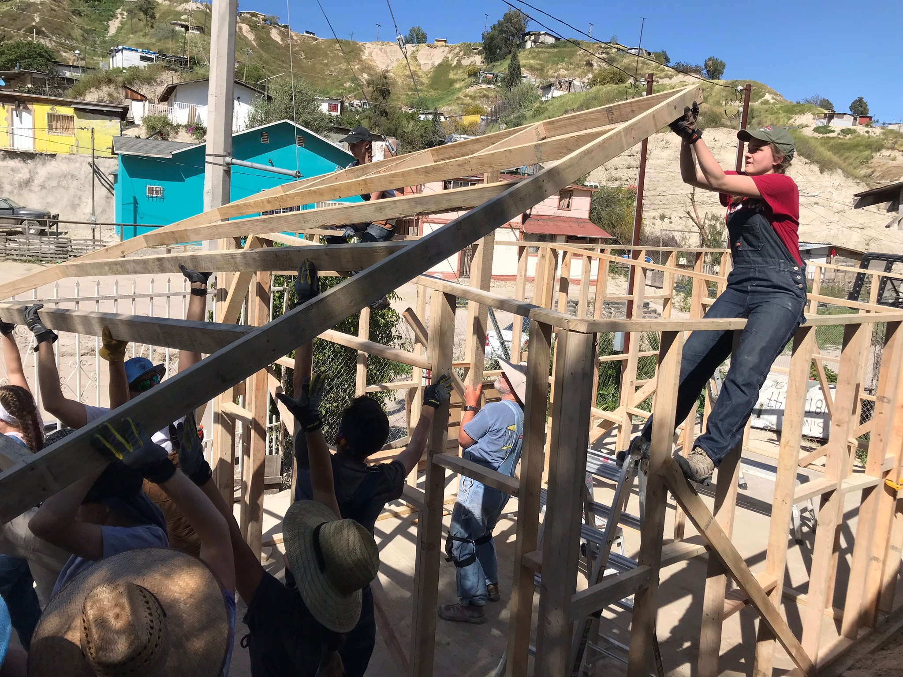
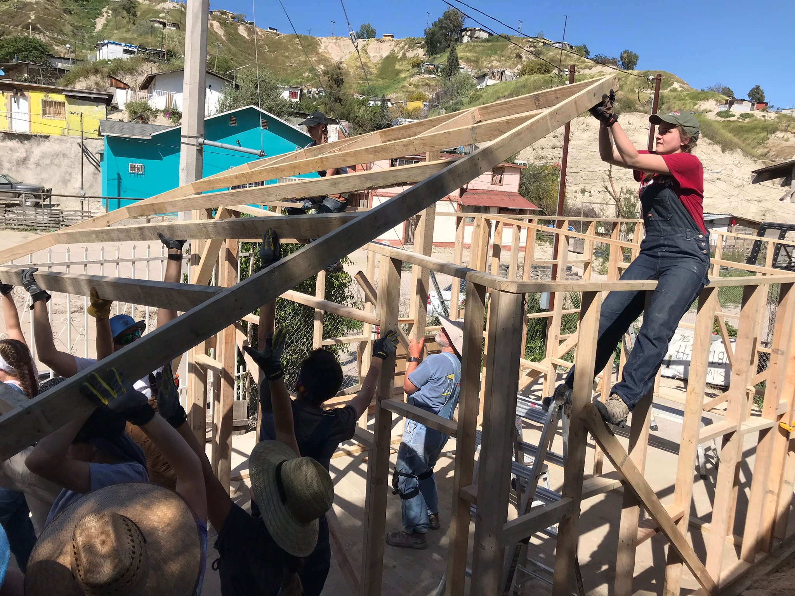
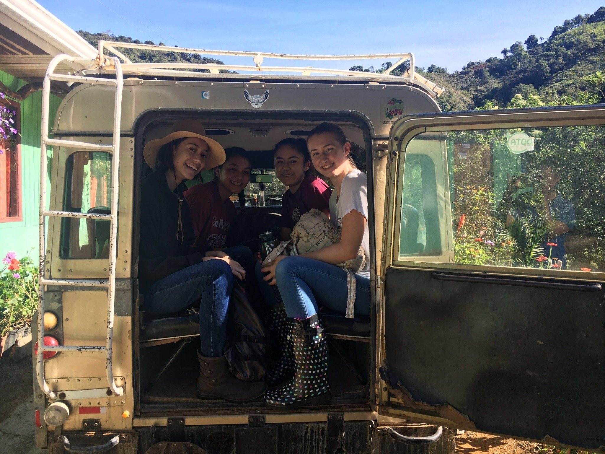
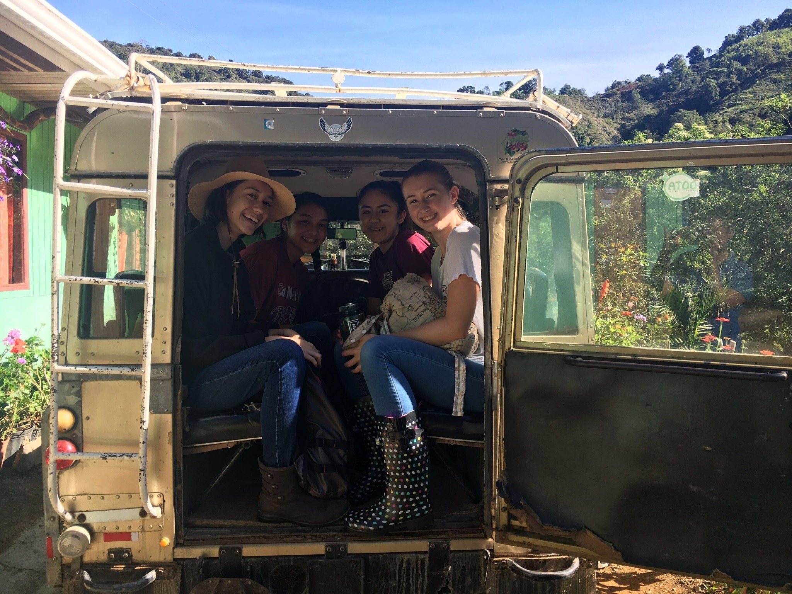

My name is Nika Self and below is a little bit about me...
School
- Currently a junior in Highschool doing a program called Middle College, where I take all my classes at Cañada College.
- When I go to College, I want to major in coputer science/software engineering and minor in bussiness.
- First choice for college is UC Berkly, Second choice is UC San Diego.
Volunteer
- I am sure passionate about Volunteer work and am on the student board for a non-profit called Dream Volunteers. I am also club president of International Service Club at Cañada.
- During the summer I went to Costa Rica and helped farm coffee beans and build a road. This summer I will be traveling to Ghana to help teach children.
- During my spring break I traveled to Mexico to build house for familes in need. I wil be returning this year.
Fun Facts
- I am on the robotics team for Woodside Highschool.
- My favorite snack is oreos, with close second of barbecue lays.
- I work as a waitress at an all American diner.
 

 
